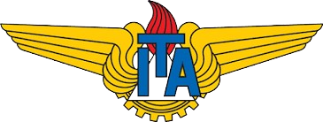

PhD Student at ITA
Benicio Barbosa Cruz
Aerial Robotics · Control Systems · Multi-Agent Systems
Doutorando no Instituto Tecnológico de Aeronáutica (ITA), com atuação em robótica aérea, guiamento, navegação e controle de sistemas multiagentes, com foco em drones cooperativos, planejamento de trajetórias, controle preditivo e métodos baseados em otimização.

Sobre
Instituição
Instituto Tecnológico de Aeronáutica (ITA)
Área de atuação
Robótica aérea, sistemas de controle, drones autônomos, cooperação multiagente, planejamento de trajetórias, guiamento, navegação e controle preditivo.
Interesses
Robótica aérea, drones autônomos, controle preditivo, cooperação multiagente, sistemas embarcados e aplicações em sistemas cooperativos.
Biografia
Pesquisador na área de Robótica Aérea e Sistemas de Controle. Atualmente, curso o Doutorado em Engenharia Aeroespacial e Mecânica, voltado para planejamento de trajetória e guiamento para equipes cooperativas de multidrones.
Mostrar mais
Pesquisador na área de Robótica Aérea e Sistemas de Controle. Atualmente, curso o Doutorado em Engenharia Aeroespacial e Mecânica, voltado para planejamento de trajetória e guiamento para equipes cooperativas de multidrones.
Mestre em Engenharia Eletrônica e Computação no Instituto Tecnológico de Aeronáutica (ITA) (2023–2025), onde desenvolvi pesquisa em planejamento ótimo de trajetórias e tomada de decisão para equipes cooperativas de drones com alvos dinâmicos e recursos limitados, utilizando métodos baseados em Controle Preditivo.
Sou bacharel em Engenharia Elétrica pelo Instituto Federal de Sergipe (IFS) Campus Lagarto (2020–2023), com experiência em eletrônica digital e analógica e automação. Durante a graduação, participei de projetos de iniciação científica nas áreas de controle de processos, robótica educacional e comunicação subaquática, com resultados publicados em eventos científicos.
Faço parte do Laboratório de Robótica Aérea (LRA) do ITA e atuo como colaborador no Laboratório de Inovação e Criatividade (LABIC) do IFS. Tenho interesse em robótica aérea, drones autônomos, controle preditivo, cooperação multiagente e sistemas embarcados. Também possuo experiência prática como eletricista residencial.
Perfis acadêmicos
Abaixo estão os meus perfis acadêmicos e institucionais, onde compartilho produção científica, currículo e histórico acadêmico.